Research
Fluid-Structure Interaction (FSI) Problem
Flapping Dynamics of a Flexible Filament in a Uniform Flow
A flexible filament (flag for 1-D) in a fluid displays a bistable response that depends on the filament length: the stretched-straight state and the self-sustained flapping state. If the filament length falls below a certain critical value, the filament maintains a stretched-straight state, regardless of the magnitude of an externally imposed perturbation. However, when the length is sufficiently long, the stretched-straight state disappears and the filament always flaps in the fluid flow (first movie below). Further increase of the filament length induces a irregular flapping state (second movie). The relavant parameters related to the problem are the mass ratio, bending rigidity of the filament and Reynolds number.
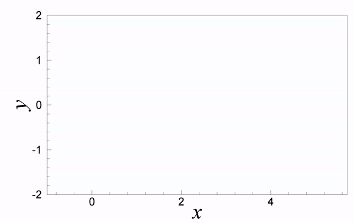
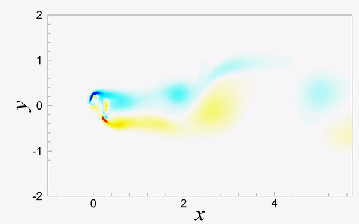
Flapping Dynamics of Coupled Flexible Flags in a Viscous Flow
In biology, any group of fish that stays together for social reasons are shoaling, and if the group is swimming in the same direction in a coordinated manner with a tighter organization, they are schooling. Schooling fish are usually of the same species and the same age/size and move with members precisely spaced relative to each other (Weihs 1973). The collective behavior of fish is not only for social interaction but also for numerous other benefits, such as defending against predators, foraging, and greater success in finding a mate. From a hydrodynamic point of view, the movement of fish in a school results in an increase in the hydrodynamic efficiency due to wake interactions (Weihs 1975). The hydrodynamics of groups of fish has been studies extensively while also considering tandem and side-by-side arrangements of flags (Ristroph & Zhang 2008; Alben 2009; Kim et al. 2010). However, fish are often arranged in a staggered manner within a school (for example, a diamond-shaped formation), and the dynamics of fish in a formation differ significantly from the dynamics of simple formations, suggesting the necessity of studyiing complex formations of flags for a better understanding of fish schooling (Fish 1999).
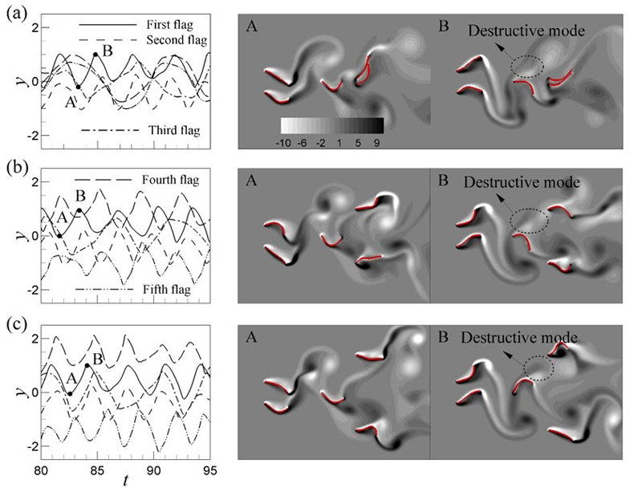
Passive Control of a Single Flag using Two Side-by-Side Flags
A deformable flexible flag in a fluid flow experiences a self-induced flapping motion in a cetain environmment, and a system with flexible flapping flag has been proposed as a means of energy harvesting, which can be utilized to generate electric energy. On the contrary, because interaction of flows with flexible elongated structures can induce structural vibration that could be a potential damage to structure in engineering (e.g., marine calbes, risers and other hydrodynamic applications), it is important to minimize flapping motion of flexible body in a flow. In order to efficiently control the flapping motion of a single flag, we propose a new passive control concept for a single flag using two side-by-side flags in upstream. An in-phase flapping mode of the two side-by-side flags in upstream enhances amplitude of the single flag, whereas an out-of-phase flapping mode of the upstream flags weakens the downstream flapping motion significantly.
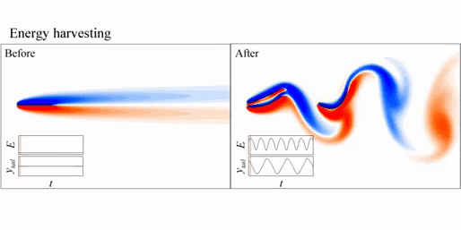
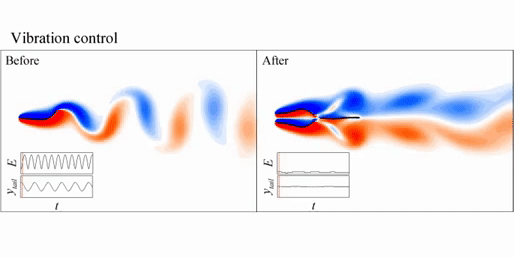
Flow-Mediated Interactions between Two Self-Propelled Flexible Fins near Sidewalls
Schooling behavior, or collective motion, is commonly observed in biological systems in nature (e.g., fish schooling and birds flocking) (Weihs 1973; Portugal et al. 2014). When the groups of active animals move in a fluid, each locomotion is influenced by the others through the flow‒mediated interactions among them, and individuals in a schooling formation can take an energetic advantage in the light of hydrodynamics (Weihs 1973; Hemelrijk et al. 2015). Furthermore, flying/swimming organisms can take advantage of hydrodynamic benefits when they move near the wall (a phenomenon commonly called ‘wall effect’), for example, steelhead trout, buoyant mandarin fish, brown pelicans (Blake 1979; Hainsworth 1988; Webb 1993). Because the flow decelerates beneath a rigid or flexible body near the wall, higher pressures on the underside can generate more lift force by the wall effect. Although individual studies of self-propelled propulsors in a school (Zhu et al. 2014a; Park & Sung 2018; Peng et al. 2018a,b,c) and a single self-propelled propulsors in wall effects (Dai et al. 2016; Zhang et al. 2017; Park et al. 2017), respectively, have widely performed, the hydrodynamic approach to the schooling behaviors under an influence of the walls have never been conducted simultaneously.
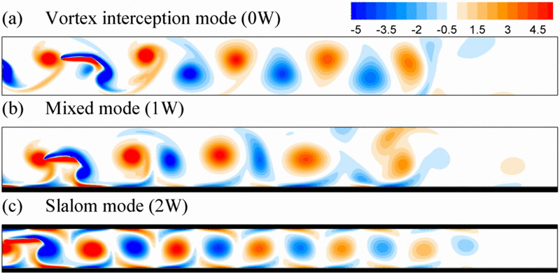
Intermittent Swimming of Two Self-propelled Flexible Fins in a Side-by-Side Configuration
Many fish and marine mammals swim by taking a combination of an active bursting phase and a passive coasting phase, which is known as burst-and-coast swimming or intermittent swimming. The advantage of intermittent swimming has been connected to fatigue recovery when coasting without energy consumption, and the amount of energy consumption to travel a unit distance can be reduced by utilizing an intermittent swimming gait (Videler & Weihs 1982; Kramer & McLaughlin 2001; Fish 2010). Examples observed in nature include northern anchovy (Weihs 1980), golden shiner (Fish et al. 1991), koi carp (Wu et al. 2007), cod (Videler 1981; Blake 1983) and zebrafish (Fuiman & Webb 1988; Müller et al. 2000; McHenry & Lauder 2005). In addition, when the collections of animals travel in a fluid, the locomotion of each is affected by others through flow-mediated interactions among them, and individuals in a school can take an energetic benefit in view of the hydrodynamics, which is known as collective (or schooling) behaviors (Weihs 1973; Hemelrijk et al. 2015). Although previous experimental and numerical studies for collective behaviors of rigid foils and flexible fins adopt a continuous swimming style for simplicity (Zhu et al. 2014; Ramananarivo et al. 2016; Park & Sung 2018; Peng et al. 2018; Newbolt et al. 2019; Jeong et al. 2021), schooling fish in nature (e.g. golden shiners and Pacific bluefin tuna) are shown to use an intermittent swimming style (Fish et al. 1991; Noda et al. 2016).
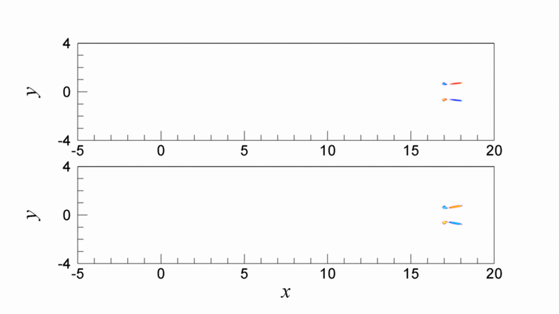
Wake Transitions of Flexible Foils in a Viscous Uniform Flow
Aquatic propulsion by fishes and other underwater organisms has long been of interest to increase energy efficiency of micro aviation and small unmanned underwater vehicles with low-noise characteristics (Lighthill 1970; Kats & Weihs 1978; Triantafyllou et al. 2000; Taylor 2003; Lauder et al. 2011). Fish are known to be flexible, with passive deformations of fins occurring during flapping (Combes & Daniel 2003), and the flexibility has been shown to increase the propulsion efficiency up to 20% by slightly reducing overall thrust compared to a rigid foil (Wu 1971; Kats & Weihs 1978). The possibility of increasing the propulsion efficiency for a flexible foil has motivated recent research activity for the effects of flexibility on the thrust force (Heathcote & Gursul 2007; Michelin & Smith 2009; Kang et al. 2011; Marais et al. 2012; Dewey et al. 2013; Zhu et al. 2014; Lagopoulos et al. 2019). However, although there have been significant efforts for study of wake structures related to the thrust force behind a rigid foil (Koochesfahani 1989; Godoy-Diana et al. 2008; Schnipper et al. 2009; Han et al. 2019; Lagopoulos et al. 2019), only a few studies have investigated flow structures generated behind an oscillating flexible foil with a limited parameter space (Marais et al. 2012; Zhu et al. 2014).
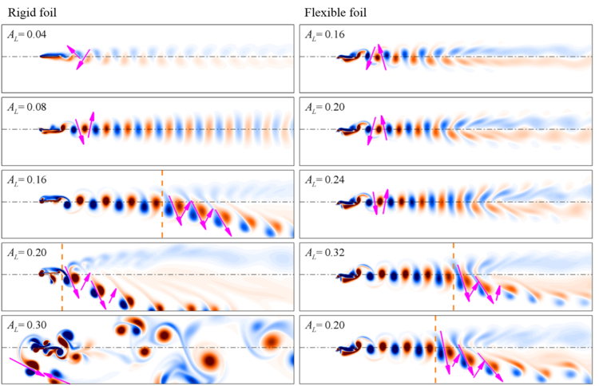
Hydrodynamic Performance of a Self-Propelled Oscillating Ray
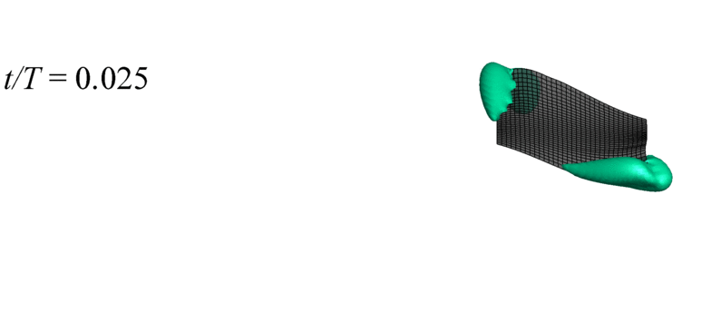
Heat Transfer Enhancement in a Channel Flow using Two Wall-Mounted Flexible Flags with a Confined Cylinder
Improving heat transfer is important for developing advanced technologies in power plants, the automotive and aerospace industries, and electronics cooling. As modern electronic devices have become more compact and their power consumption demand increases, one of the key topics for improving heat transfer is to design efficient heat sink systems that are critical to the operation of electrical devices that generate significant internal heat.
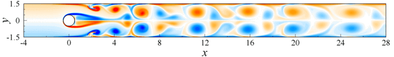
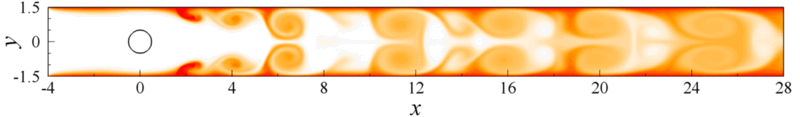
Drag Reduction of a Downstream Caudal Fin Operating in the Wake of an Upstream Dorsal Fin via Deep Reinforcement Learning (DRL)
Living fish in nature are known to use a sensory feedback system consisting of proprioceptive sensors (which monitor the internal kinematic state) and exteroceptive sensors (which gather information from the external fluid environment). When fish equipped with a sensory feedback system perceive their kinematic state and the surrounding flow environment, they use this information to make a reasonable judgment and adjust their body and fin motions to achieve specific objectives, such as efficient propulsion, sudden acceleration for predator avoidance, chasing prey and station holding. In the present study, we employ a DRL framework coupled with numerical simulations of fluid-flexible body interactions to investigate efficient locomotion, focusing on drag reduction, of an actively flapping caudal fin operating in the wake of a passively flapping dorsal fin.
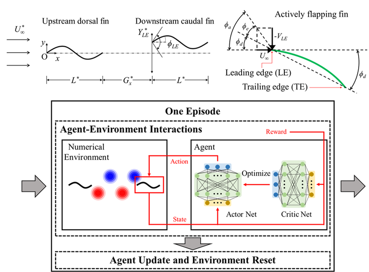
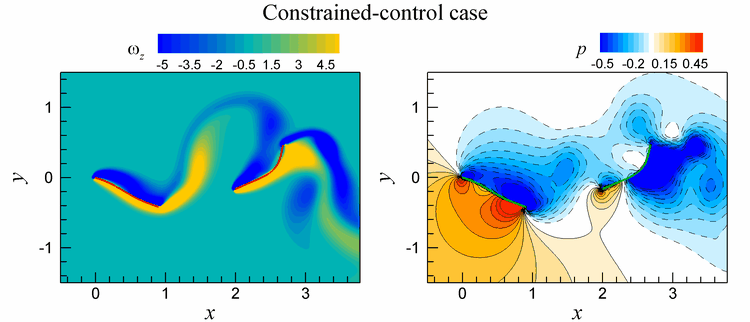
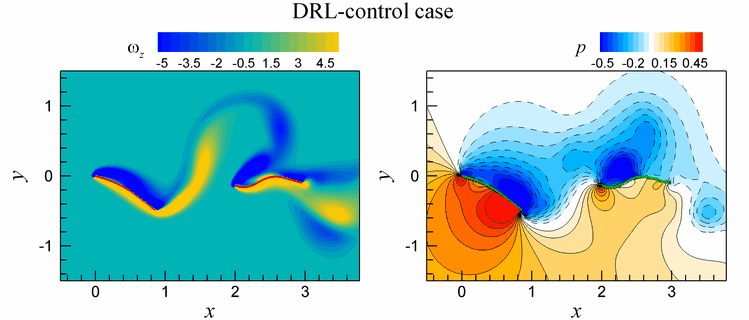
Heat Transfer Enhancement in a Channel Flow by a Wall-Mounted Flexible Flag via Deep Reinforcement Learning (DRL)
Enhancing heat transfer is crucial for advancing technologies across various engineering fields, including electronics cooling, power generation, aerospace, and automotive industries. As modern electronic devices have become more compact while power consumption demands rise, optimizing heat transfer performance has become a key focus. In the present study, a heat transfer system with a single wall-mounted flexible flag, which is trained by a closed-loop feedback controller based on deep reinforcement learning (DRL), is proposed to improve the thermal performance of the flow inside a channel. For the controlled wall-mounted flexible flag using DRL, although the heat flux decreased compared to the uncontrolled flexible flag due to mode transition, the energy loss decreased significantly due to a large decrease in the average y-position, resulting in a significant increase in heat efficiency.
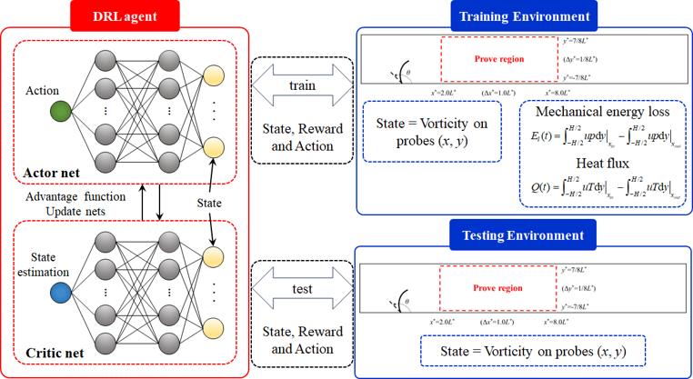
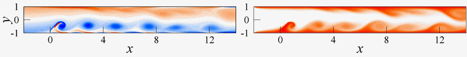